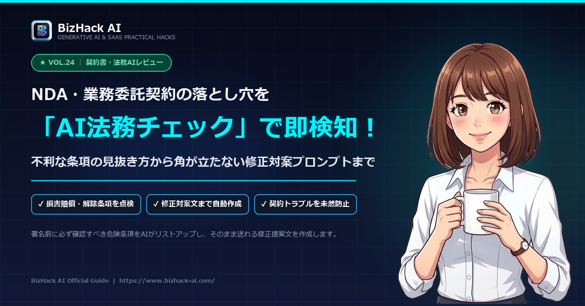

【契約書・法務AIレビュー】NDA・業務委託の落とし穴を検知する対案作成プロンプト

📌 この記事で持ち帰れる成果＆特徴
-
不利条項のあぶり出しプロンプト
損害賠償の青天井、一方的解約、著作権の全譲渡など、危険な条項を瞬時に特定。 -
「角が立たない」修正条文＆交渉文作成
「ここを直してください」と棘のないビジネス敬語で提案する対案文をワンクリック生成。 -
絶対遵守のマスキング（匿名化）ルール
社名や取引金額など機密情報をAIに学習させないための安全チェックリスト。
⚡ 10秒お試し：ChatGPTにこのまま投げるだけ！
# あなたの役割 あなたは企業の法務コンサルタントおよび契約実務のエキスパートです。 以下の契約書ドラフトを詳細にレビューし、当事者である【自社（受託側/乙）】の立場から見て、不当に不利な条項や法的なリスク、曖昧な表現を抽出してください。 # 重点チェック項目 1. 損害賠償責任の範囲（上限の有無、直接損害に限定されているか） 2. 秘密保持の対象範囲および保持期間（一方的になっていないか） 3. 成果物の権利帰属（著作権・特許権が一方的に相手に移転していないか、著作者人格権の不行使条項） 4. 契約の解除条件（相手側からの一方的・即時解除条項がないか） 5. 支払い期日・検収基準（検収合格とみなす期日が明確か） # 出力フォーマット 1. 【総合リスク判定】：（高 / 中 / 低）とその要約理由 2. 【要修正条項リスト】： - 条文番号と該当箇所 - 指摘理由（どのような実害・リスクが想定されるか） - 推奨される修正案（条文の差し替えテキスト） 3. 【契約交渉におけるワンポイント助言】 # 契約書ドラフト本文 （ここにマスキング済みの契約書条文を貼り付け）
💡 使い方：会社名や金額など秘密情報を【甲】【乙】にマスキングした上で、ChatGPTへ送信してください。
1. 契約書チェックを放置すると起きる「3大リスク」
「相手は大企業だから大丈夫だろう」「テンプレート通りだろう」と盲目的に署名・押印してしまうのは非常に危険です。特に以下の3つの条項には注意が必要です。
01
損害賠償の青天井
賠償上限が「委託料の額」等に限定されておらず、万が一の際に数千万円を請求されるリスク。
02
知的財産権の丸獲られ
自分が開発・制作した素材やノウハウの権利まで相手方にすべて譲渡させられる条項。
03
過度な競業避止義務
契約終了後も同業種での活動が制限され、他のクライアントと取引できなくなる罠。
2. AIに契約書を読ませる前の「情報マスキング」鉄則
AIに契約書をレビューさせる際、**「機密情報の漏洩」**を絶対に防がなければなりません。ChatGPTに入力する前に、必ず以下の単語をプレースホルダーに置き換えてください。
置換例（マスキングルール）
自社名（株式会社アルファ） ➡ 【甲】または【自社】
相手先企業名（株式会社ベータ） ➡ 【乙】または【取引先】
金額（月額50万円、総額300万円） ➡ 【〇〇円】
特定の人名、住所、電話番号 ➡ 【担当者名】【住所】※ChatGPTの「オプトアウト設定（Data Controlsで学習オフ）」を有効にしておくことも必須です。
3. 【コピペ用】不利条項検知＆リスク分析プロンプト
以下のプロンプトをChatGPTまたはClaudeに入力し、末尾に契約書の条文テキストを貼り付けてください。
契約書リスク分析プロンプト
# あなたの役割
あなたは企業の法務コンサルタントおよび契約実務のエキスパートです。
以下の契約書ドラフトを詳細にレビューし、当事者である【自社（受託側/乙）】の立場から見て、不当に不利な条項や法的なリスク、曖昧な表現を抽出してください。
# 重点チェック項目
1. 損害賠償責任の範囲（上限の有無、直接損害に限定されているか）
2. 秘密保持の対象範囲および保持期間（一方的になっていないか）
3. 成果物の権利帰属（著作権・特許権が一方的に相手に移転していないか、著作者人格権の不行使条項）
4. 契約の解除条件（相手側からの一方的・即時解除条項がないか）
5. 支払い期日・検収基準（検収合格とみなす期日が明確か）
# 出力フォーマット
1. 【総合リスク判定】：（高 / 中 / 低）とその要約理由
2. 【要修正条項リスト】：
- 条文番号と該当箇所
- 指摘理由（どのような実害・リスクが想定されるか）
- 推奨される修正案（条文の差し替えテキスト）
3. 【契約交渉におけるワンポイント助言】
# 契約書ドラフト本文
（ここにマスキング済みの契約書条文を貼り付け）4. 相手と揉めずに合意できる「修正対案・交渉メール」生成術
修正案が出たとしても、「この条文は不利なので直してください」とストレートに伝えると角が立ちます。AIに対案メールを作成させましょう。
修正依頼メール作成プロンプト
# 依頼内容
先ほど検出された修正箇所に基づき、相手方の担当者に送る「契約書修正のお願いメール」を作成してください。
# トーン＆マナー
- 相手への感謝と取引開始への前向きな姿勢を明確にする
- 相手を責めるニュアンスを完全に排除し、「社内法務（顧問弁護士）の確認ルールに基づき、双方の公平性の観点から微修正をご相談させていただく」という建前をとる
- どの条文を、どのように、なぜ変更したいのかを箇条書きで分かりやすく整理する5. 弁護士法72条（非弁行為）とAIレビューの正しい付き合い方
法律業務を扱う上で、**弁護士法（非弁護士の法律事務の取扱い等の禁止）**の理解は不可欠です。
⚠️ 法務上の重要注意事項
AIによる契約書レビューは「自社のリスク確認・思考の補助ツール（壁打ち）」として利用するものです。第三者に対して有償で法的判断を提供する行為や、数千万円規模の大型契約・複雑な係争事案においては、必ず顧問弁護士や弁護士ドットコム等の専門資格者による最終リーガルチェックを受けてください。
AIによる契約書レビューは「自社のリスク確認・思考の補助ツール（壁打ち）」として利用するものです。第三者に対して有償で法的判断を提供する行為や、数千万円規模の大型契約・複雑な係争事案においては、必ず顧問弁護士や弁護士ドットコム等の専門資格者による最終リーガルチェックを受けてください。
6. まとめ＆チェックシート
AIを活用した契約書チェックは、社内リソースが限られる現場にとって最強の防衛シールドとなります。
01
マスキング徹底
社名や金額を伏せ、機密漏洩を完全に防止する。
02
プロンプトで抽出
賠償・知財・解除条件などの地雷条項を5分で検知。
03
角を立てずに交渉
公平性を盾にした丁寧なメール対案でスムーズに合意。
「サインする前の5分間」のAIチェックを習慣化し、自社の権利と利益をスマートに守り抜きましょう！